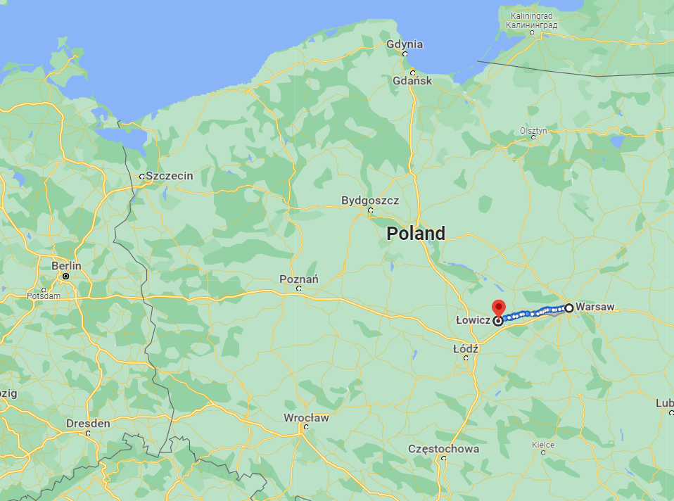
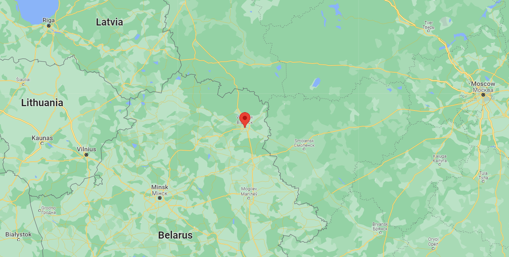
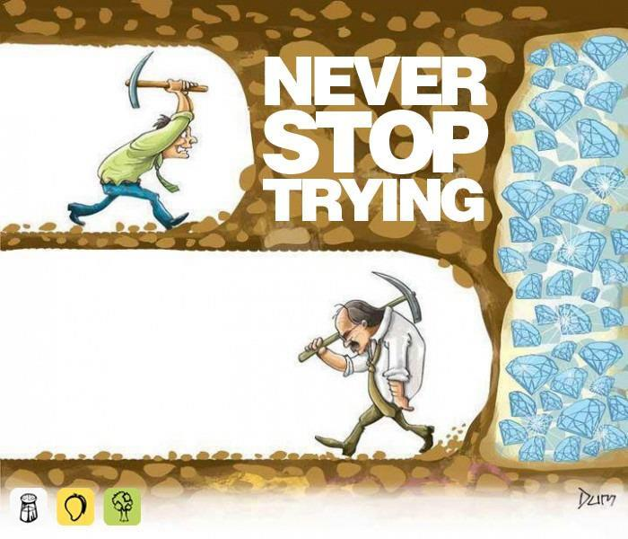
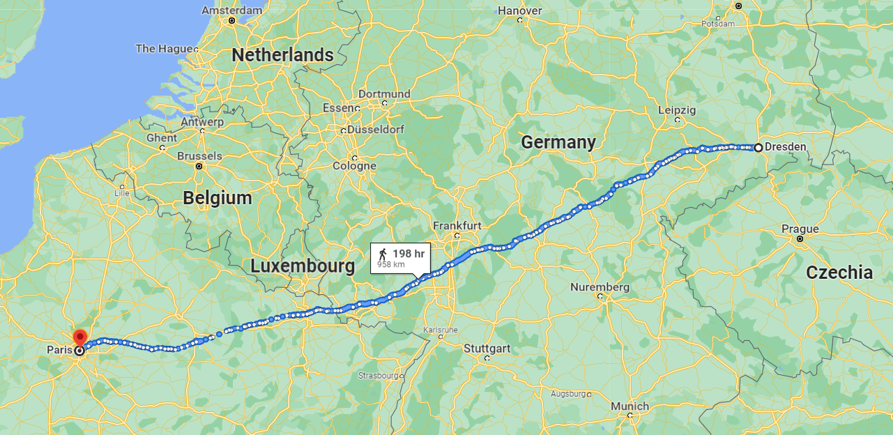
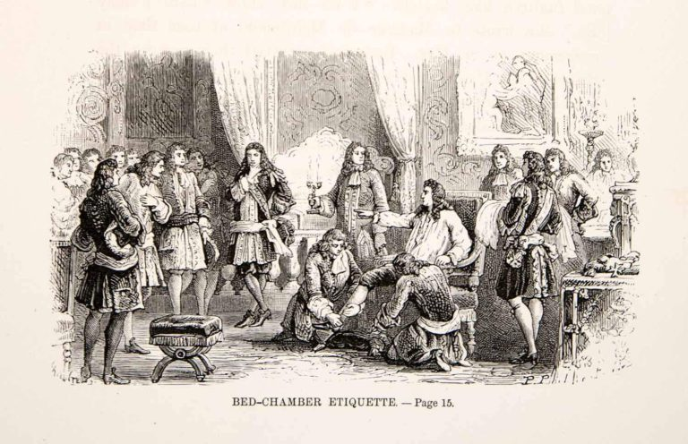

새벽의 불청객 - 2주간의 로드 무비
게시: 2022-01-31T06:30:20+09:00
12월 11일 새벽, 꾸벅꾸벌 졸며 썰매를 달리던 나폴레옹은 콜랭쿠르에게 마치 우연처럼 아무렇지도 않게 현재 지나고 있는 소도시의 이름을 물었습니다. 워비치(Łowicz)라는 대답을 듣고는, 마치 정말 우연히 생각났다는 듯이 나폴레옹은 '여기서 머지 않은 곳에 마리아 발레프스카의 집이 있다'라며 잠깐 거기에 들러 옛 연인에게 안부인사(?)나 전하면 어떨까라며 콜랭쿠르의 눈치를 살폈습니다. 아마 나폴레옹은 바르샤바를 떠난 뒤 워비치까지의 거리와 소요 시간을 그 비상한 머리로 암산하면서 딱 그 시간대에 콜랭쿠르에게 '여기가 어디인가?'라고 물으려고 벼르고 있었을 것입니다. 나폴레옹도 남자였고, 나폴레옹은 마리아 발레프스카를 한때 정말 사랑했기 때문이었습니다.

(워비치(Łowicz)는 나폴레옹이 드레스덴을 거쳐 파리로 향하는 길목에 있었으며, 바르사뱌에서 불과 80km 떨어진 곳이었습니다. 밤새 썰매를 달렸다면 새벽 무렵에 그 동네를 통과하고 있었을 것입니다. 수십만의 군대를 다 말아먹고 도망치던 그 새벽에 옛 애인을 생각해내고 썰매를 돌리라고 명하다니, 어떤 측면에서는 참 로맨틱한 이야기입니다.) 그러나 콜랭쿠르는 펄쩍 뛰었습니다. 처음에는 '폐하가 지나간다는 소식을 알아낸 독일의 반역자들이 암살조를 꾸며서 기다리고 있을 수 있다'라는 점잖은 핑계를 대며 말리다가, 나폴레옹이 무슨 말도 안되는 소리라는 반응을 보이자 솔직담백하게 진짜 이유를 대며 나폴레옹을 협박했습니다. 내용은 대충 이랬습니다. "파리에 한시라도 바삐 도착해야 한다면서 지금 이 고생을 하고 있는데 여기서 여자를 만나러 지체한다고요? 그건 그렇다쳐요. 결국 폐하가 발레프스카 공작부인 만난 것을 루이즈 황비가 모를 것 같아요? 뒷감당 어떻게 하시려고 그러세요? 폐하도 황비님 눈치 보쟎아요? 그것도 됐다고 쳐요. 막말로, 러시아에서 얼어죽어가는 수만의 군대를 버리고 오는 폐하가 도중에 삼천포로 빠져서 옛 정부를 만났다? 이거 소문 나면 국민들이 폐하를 어떻게 생각하겠어요?" 나폴레옹이 독재자는 맞습니다만 그는 결코 전제군주가 아니었고 그의 권력 기반은 민중의 인기에 있었습니다. 나폴레옹도 신랄한 콜랭쿠르의 반대를 이기지 못하고 발레프스카를 만나러 가는 것을 포기해야 했습니다. 그렇게 나폴레옹을 좌절시킨 콜랭쿠르는 그 보복으로 또다시 시작된 나폴레옹의 자기 합리화 일장 연설을 끈기있게 들어야 했습니다. 콜랭쿠르의 회고록에는 이때 나폴레옹이 러시아 원정 실패로 이어진 자신의 실수를 크게 2가지로 요약했다고 적혀 있습니다. 나폴레옹 본인이 생각한 2가지 중대 실수는 다음과 같았습니다. (1) 비텝스크에서 멈춰야 했다 : 아직 러시아 본토라고는 할 수 없는 비텝스크(Viciebsk, Vitebsk)까지만 전진한 뒤 거기서 일단 멈춰서 후방인 리투아니아를 정비하고 그 다음해 봄에 다시 전진해야 했었는데, 조금만 더 따라잡으면 제1,2군으로 분산된 러시아 야전군을 각개 격파할 수 있다는 욕심에 그러지 못했다는 이야기였습니다.

(오랜만에 다시 보는 비텝스크의 위치입니다. 오늘날 벨라루스 영토인 비텝스크는 정말 네만 강에 접한 카우나스에서 모스크바까지의 여정 중 딱 중간 정도에 위치해있습니다.) (2) 모스크바에서 2주 더 머문 것이 패착이었다 : 당시엔 몰랐지만 정말 딱 2주만 먼저 출발했어도 그랑다르메가 사실상 전멸하는 일은 막을 수 있었습니다. 나폴레옹이 모스크바 성문을 나서던 10월 18일에는 이미 모스크바에 첫눈이 내린 뒤였고, 진짜 참혹한 추위가 시작된 것은 11월 29일 정도부터였습니다. 나폴레옹이 딱 2주만 먼저 출발했다면 그런 추위 속에서 행군을 할 일도 없었고, 아마 비텝스크나 민스크 정도까지만 후퇴해도 충분했을 것입니다. 그리고 후퇴 과정 내내 그랑다르메를 괴롭힌 것은 바로 코삭 기병대였는데, 돈 강 유역에서 새로 모병된 코삭 기병들 2만이 10월 중순 경에야 타루티노의 쿠투조프 본진에 도착했기 때문에, 만약 나폴레옹이 10월 초에 모스크바를 나섰다면 코삭들에게 괴롭힘을 당하는 일은 훨씬 적었을 것입니다. 물론 주식이나 노름이나 전쟁이나 매몰비용과 본전 생각이 간절하기 때문에 '조금만 더 조금만 더' 하다가 망하기 쉬운 법인데, 나폴레옹도 그 함정을 빠져나가지 못한 것이지요.

('절대 포기하지 말라'는 아주 유명한 그림입니다만, 사실 저런 그림 믿으면서 포기할 때를 놓치면 나폴레옹 꼴 나기 쉽습니다.) 워비치의 유혹을 뿌리친 나폴레옹은 정말 쉬지 않고 말을 달렸습니다. 그는 불과 3일만인 12월 14일 새벽에 작센 왕국의 수도 드레스덴(Dresden)에 도착했습니다. 워비치에서 드레스덴까지는 약 500km로서, 하루에 167km씩 달렸다는 이야기로서, 당시 급행 우편물을 나르던 파발마의 속도인 하루 200km에 육박하는 일정이었습니다. 겨울 눈길이었다는 점을 생각하면 대단한 속도였습니다. 이렇게 새벽에 남의 나라 수도에 온 불청객은 일단 드레스덴 주재 프랑스 대사관으로 갔습니다. 여기서도 당연히 새벽에 온 집안이 발칵 뒤집혔습니다. 러시아 어딘가에 있어야 할 폐하가 갑자기 드레스덴에, 그것도 꼭두새벽에 나타나다니! 나폴레옹은 태연히 비서들을 불러 여기저기 동맹국 군주들에게 이런저런 편지를 구술했고, 그러는 동안 작센 국왕 아우구스투스 1세(Friedrich August I)에게도 사람을 보내어 불러오게 했습니다. 아무리 황제라고 해도, 다들 잠든 새벽에 일국의 왕에게 사람을 보내는 것은 엄청난 실례였습니다. 작센 왕궁에 도착한 프랑스 대사관 직원도 작센 국왕을 침실에서 깨우도록 작센 왕궁 시종들을 설득하는데는 당연히 문제가 많았습니다만, 결국 아우구스투스 1세는 일어나야 했고 졸린 눈을 비비며 그 새벽에 프랑스 대사관으로 마차를 달렸습니다. 도착해서 보니 정작 나폴레옹도 그 1시간 정도 사이에 쪽잠을 자다가 아우구스투스 1세가 왔다는 소식에 막 일어난 참이었습니다. 아우구스투스 1세에게는 무척이나 모양 구겨지게, 나폴레옹은 침실에서 침대에 앉은 채로 졸린 얼굴로 아우구스투스 1세를 만났습니다. 그러나 그 메시지는 아주 명확했습니다. 러시아 원정의 실패에도 불구하고 작센 왕국에 대한 프랑스의 동맹은 굳건하며, 봄이 되면 새로운 30만 군대가 편성되어 다시 동쪽 국경에 배치될 것이니 작센도 협조하기 바란다는 것이었습니다. 아우구스투스 1세가 할 수 있는 대답에는 여지가 많지 않았습니다. 작센 왕국은 프랑스의 새로운 군대에 인원과 물자를 댈 것을 약속해야 했습니다.

(작센 국왕 아우구스투스 1세입니다. 그는 나폴레옹보다 19세 연상이었고, 한마디로 신사 중의 신사였습니다. 선제후 공국이었던 작센은 프랑스 대혁명 때부터 프로이센-오스트리아-프랑스 사이에서 무척 어려운 입장이었는데, 그는 작은 나라 작센의 수장으로서 전쟁의 참화로부터 백성을 구하기 위해 온갖 힘을 다 썼습니다. 그러다 결국 1806년에는 프로이센에 의해 거의 강압적으로 대불동맹전쟁에 참전하게 되었는데, 다행히(?) 나폴레옹이 예나-아우어슈테트 전투에서 하도 신속하게 프로이센군을 분쇄하는 바람에 별 양심의 가책을 느끼지 않고 나폴레옹과 화평 조약을 맺을 수 있었습니다. 나폴레옹이 그를 바르샤바 공작에 봉하면서 바르샤바 공국의 '바지 사장' 노릇을 하게 한 것은 전혀 엉뚱한 일은 아니었습니다. 그는 부계 및 모계 양쪽으로 폴란드 왕가와 인척 관계가 있었기 때문에, 그는 폴란드 왕국의 정당한 후계자로 지정되어 있었고, 실제로 1798년 폴란드 국왕 스타니슬라스가 사망했을 때 그에게 왕위 계승권이 주어졌었습니다. 그러나 뻔히 보이는 정세 때문에 그는 왕좌를 거절했고, 기다렸다는 듯이 프로이센과 오스트리아, 러시아는 폴란드를 나눠 먹었습니다. 그는 비록 바지 사장이지만 폴란드에 대해 애정을 가지고 있었고 폴란드 왕국을 재건하여 폴란드인들에게 희망을 주려 애썼습니다. 물론 나폴레옹의 패망과 함께 그 꿈은 좌절되었는데, 아우구스투스 1세는 평생 폴란드인들에 대해 미안한 감정을 가지고 있었다고 합니다.) 나폴레옹의 이런 행동은 무척 무례하고 뻔뻔스럽게 보이기도 합니다. 그러나 파리의 민심이 흔들리기 전에 재빨리 상황을 장악해야 하는 입장에서, 드레스덴 왕궁에 대낮에 도착하도록 일부러 느리게 갈 수도 없는 일이었고 또 드레스덴을 지나가면서 작센 국왕을 만나지 않고 가는 것은 그야말로 도망자로 오해받기 딱 좋은 상황이었습니다. 그럴 수록 당당하게 나와야 했던 것은 이해가 가는 일입니다. 정말 급했던 그는 드레스덴에서도 몇시간 머물지 않았고, 아우구스투스 1세가 빌려준 작센 왕가 소유의 마차를 타고 신속하게 이동했습니다. 그는 도중에 숙소에 들러도 식사만 했을 뿐 침대에서 잠을 자는 일은 없었고 대부분의 역사에서 말만 교체한 뒤 곧장 떠났으며, 아예 마차에서 내리지 않는 경우도 많았습니다. 아무래도 썰매 대신 제대로 된 마차로 갈아탄데다 이렇게 정말 무지막지 하게 서두르다보니 그는 4일만인 12월 18일 자정 무렵, 파리 튈르리 궁전 앞에 도착할 수 있었습니다. 약 960km를 4.5일만에 달렸으니 하루에 213km를 달린 것이고, 정말 급행 우편 파발마보다 더 빨랐던 셈입니다.

(드레스덴에서 파리까지의 거리는 약 960km입니다. 자동차로 고속도로를 달려도 10시간 정도 걸리는 것으로 나옵니다.) 드레스덴에서처럼, 나폴레옹의 파리 입성은 모두의 예상을 깨는 일이었습니다. 당시 파리도 러시아 원정이 실패로 끝났다는 것을 알고 있었습니다. 나폴레옹의 명에 의해 일부러 날짜를 맞춰 12월 16일에 그랑다르메 회보가 발표된 것입니다. 그로 인해 다들 불안해 하고 있던 차에, 갑자기 나타난 푸른 벨벳 외투와 두꺼운 털모자를 쓴 남자가 나폴레옹이라고는 아무도 생각하지 못했습니다. 심지어 튈르리 궁 정문의 근위병도 그냥 평소처럼 러시아 전선에서 중요한 소식을 들고온 고위 인사인가 보다 하며 통과를 시켜주었을 뿐, 그가 나폴레옹이라는 것을 몰랐습니다. 이 남자가 나폴레옹이라는 것을 처음 알아본 것은 바로 황후 마리 루이즈였습니다. 한밤중에 침실 밖에서 시녀들이 소란을 떠는 소리를 듣고 나가보니 시녀들이 웬 두꺼운 외투를 입은 두 남자가 황후 침실로 들어오려는 것을 막고 있었던 것입니다. 마리 루이즈는 놀라움과 기쁨에 겨워 나폴레옹의 품에 안겼고, 나폴레옹은 이 젊은 황후를 껴안고 서둘러 침실로 들어가면서도 다른 한 남자였던 콜랭쿠르에게 총리 캉바세레스(Cambaceres)에게 내일 아침에 황실의 조례(lever, levee)가 거행될 거라고 알리도록 지시했습니다.

(Lever는 프랑스어로서 일으키다 들어올린다 정도의 뜻인데, 프랑스 왕실에서 왕이 대략 8시에 일어날 때 침대 커튼을 걷고 왕에게 옷을 입히는 것부터 시작하여 신하들이 인사를 올리는 복잡한 의식입니다. 나폴레옹도 황제가 된 후에 lever를 부활시켰는데, 다만 옷 입는 과정 등은 생략하고 9시에 황실 응접실에서 그의 신하들의 보고를 받는 것부터 했습니다. 그러니까 조례 같은 거라고 보시면 됩니다. 나폴레옹의 조례는 짧았고 허례허식 따위는 없었으며, 정말 요점을 짚는 보고를 듣고 명령을 내리는 것만 있었다고 합니다.) 이렇게 러시아 스마르곤에서 출발한지 딱 2주만에 파리에서 정무를 시작한 나폴레옹은 프랑스 황제 자리를 고스톱 쳐서 딴 것이 아니라는 것을 그 순간부터 세상에 증명해보입니다. Source : 1812 Napoleon's Fatal March on Moscow by Adam Zamoyski
https://en.wikipedia.org/wiki/Frederick_Augustus_I_of_Saxony https://shannonselin.com/2017/05/french-kings-rise-grand-lever/